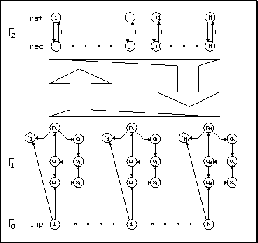

The realization of ART2 differs from the one of ART1 in its basic idea.
In this case the network structure would have been too complex,
if mathematics had been implemented within the network to the same
degree as it has been done for ART1. So here more of the functionality
is in the control program.
In figure  you can see the topology of an ART2
network as it is implemented in SNNS.
you can see the topology of an ART2
network as it is implemented in SNNS.

All the units are known from the ART2 theory, except the rst units. They
have to do the same job for ART2 as for ART1 networks. They block the
actual winner in the recognition layer in case of reset.
Another difference between the ART2 model described in [CG87b] and
the realization in SNNS is, that originally the
units u have been used to compute the error vector r, while
this implementation takes the input units instead.
have been used to compute the error vector r, while
this implementation takes the input units instead.
For an exact definition of the required topology for ART2 networks in
SNNS see section